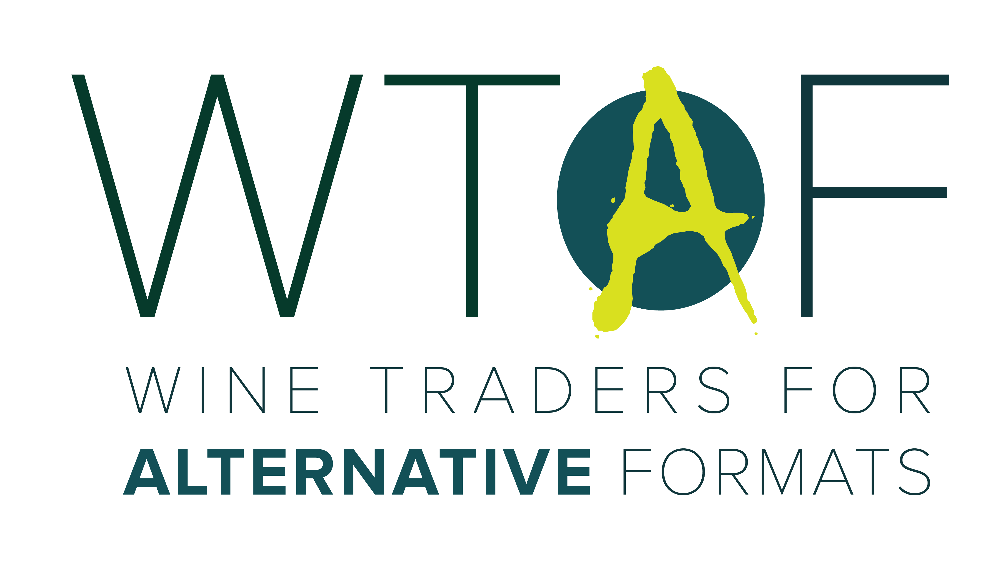

Home
Open Letter
In the news
Events
The Carbon Footprint of single use glass
wine bottles in the UK so far this year
News
Wine Business International
- Alternative Packaging: Everything but glass - September 2022
JancisRobinson.com
- Wines in Alternative Packaging – May 2022
Decanter.com
- Wine in can, bag and box: overview and 15 to try - March 2022
Harpers
- Alternative formats group refuses to let wine fall behind - November 2021
Which?
- How to buy more sustainable wine - June 2022
WineBlast
- Wine's Alt Format Warriors Battle Climate Change – November 2021
Podcast